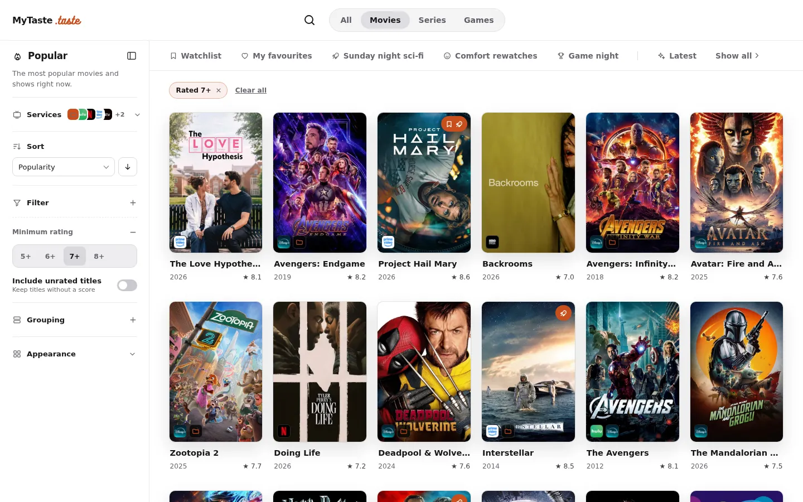
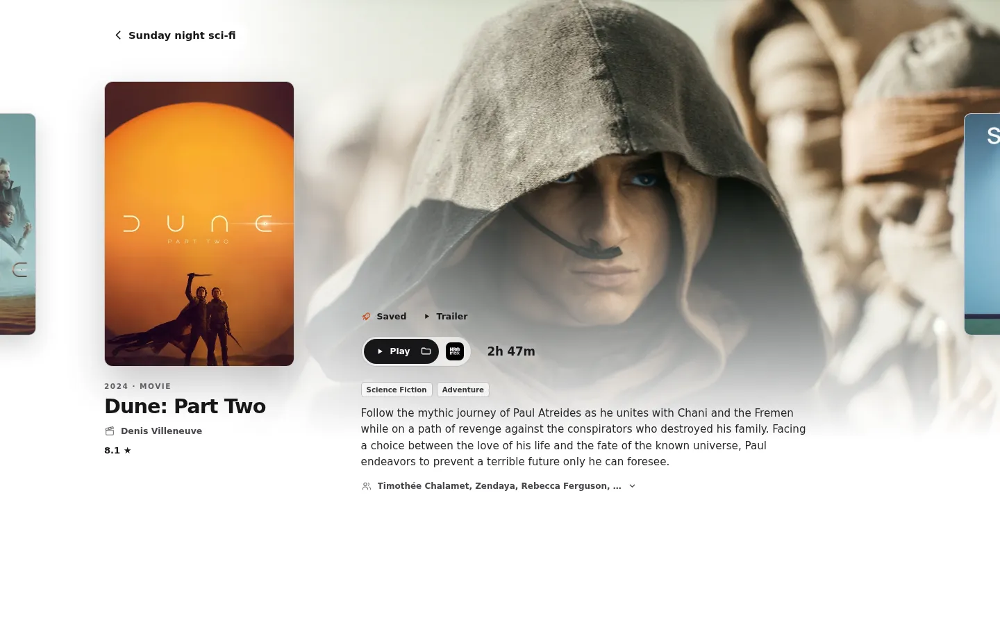
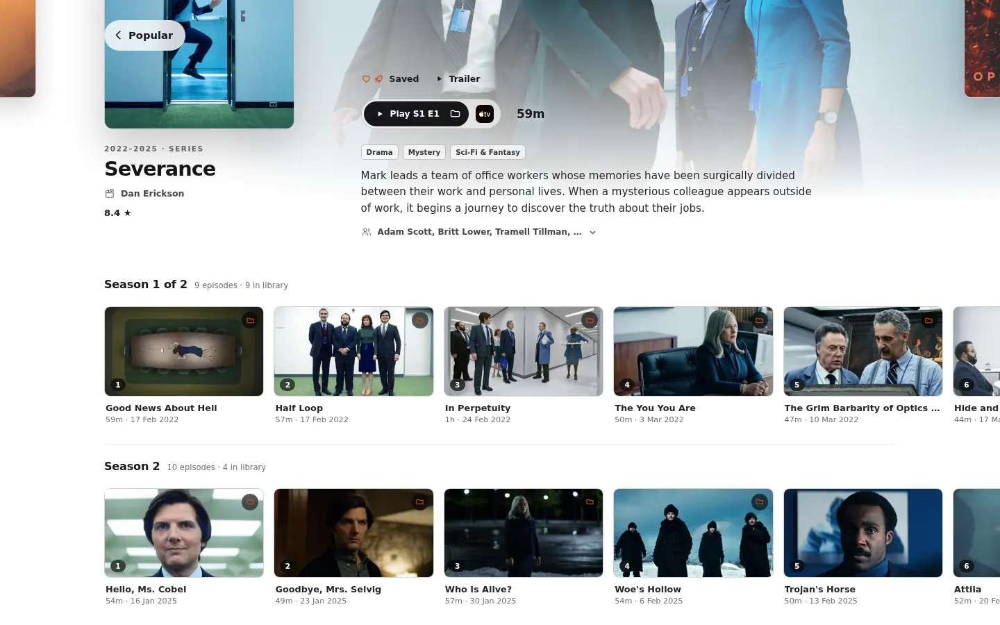
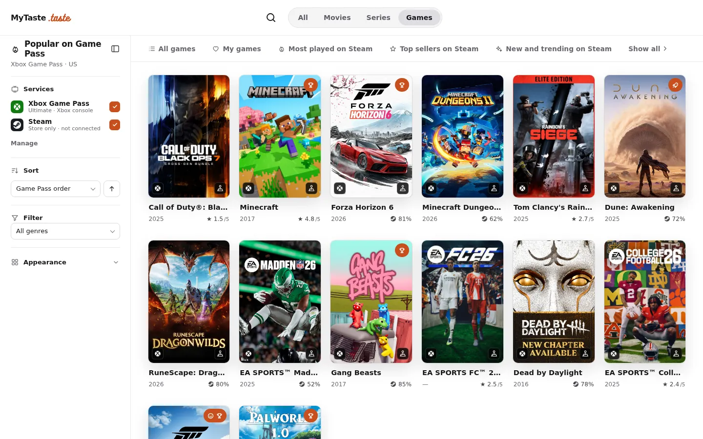

extract your taste for your agents or others
With My Taste you can watch all your media, streaming or local, in a single interface. Create collections to share with others or add other people's collections.
Media Server
Your streaming services and your own folders, mixed into one poster wall.
- Pick the services you pay for; MyTaste shows what they carry in your country.
- Point it at a USB drive, a NAS share, or the folders Plex already uses. Files are matched on TMDB and sorted in with everything else.
- A built-in player: direct play or ffmpeg streaming, subtitles, audio choices, and resume where you stopped.
- Xbox Game Pass and Steam games sit beside the movies and series.




.taste format
One file for a vibe.
A .taste file holds collections of mixed media (movies, series, music,
articles, games) that share a mood, with metadata, availability, tags, and optional
posters and screenshots. It is an open ZIP-based format that people and agents can both
read.
Login
One interface to all entertainment: your streaming services, local movies, games, and articles.
Hosted accounts are not open yet. Until then, run MyTaste on your own machine.
Self-host
MyTaste is free and open source. It runs on anything with Python 3.11, a Raspberry Pi included.
git clone https://github.com/RUverse/my-taste
cd my-taste
uv sync
export MYTASTE_TMDB_TOKEN=your-token
uv run mytaste serveYou need a free TMDB API token. Prefer containers? The repository has a Docker Compose example.